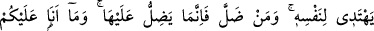

Allah’ın has kulları, merhametli ve halimdirler,
İşleri düzeltmekte ilâhî ahlâka sahiptirler.
Rüşvet almaksızın insanlara acıyıp yardım ederler.
Şiddet zamanlarında, sıkıntı vakitlerinde
Allah Teâlâ’dan üzerimize rahmetinden sağanaklar akıtmasını, lütuf ve mağfiret
kâseleriyle bize ikrâmını devam ettirmesini niyaz ederiz.
108. De ki: “Ey insanlar, işte size Rabb’inizden hak geldi. Artık doğru yola gelen
kendisi için gelir, sapan da kendi zararına sapar. Ben sizin üzerinize vekil değilim.”
Mekke kâfirlerine “de ki: “Ey insanlar, işte size Rabb’inizden hak” yâni Kur’an-ı
Azîm “geldi” ve siz Kur’an’ın muhtevasındaki açık deliller ve hidayetten haberdar
oldunuz. Bu bakımdan ne bir mazeretiniz ne de Allah Teâlâ’ya karşı bir huccetiniz
kalmıştır. “Artık” Kur’an’a îmân edip içindekilerle amel etmek suretiyle “doğru yola
gelen kendisi için gelir,” hidâyete ermesinin faydası sadece kendisinedir. O’nu inkar
edip ondan yüz çevirerek “sapan da kendi zararına sapar.” Sapmasının vebali sadece
kendisine aittir.
Maksad Hz. Peygamber (s.a.)’i bir fayda sağlamak yahut zarardan kurtulmak gibi
kendisine âid bir gayeden tenzih etmektir. Nitekim ‘gelme’ fiilinin bir vasıta ile
olduğunu gösteren bir şey olmaksızın Hak Teâlâ’ya isnad edilmesi de buna işâret
etmektedir.
“Ben sizin üzerinize vekil değilim” işlerinizin kendisine bırakıldığı bir muhafız
değil, sadece müjdeci ve uyarıcıyım.
et-Te’vîlâtü’n-Necmiyye’de şöyle denilmektedir: “İşte size Rabb’inizden gerçek
geldi” ki bu sağlam ip olan Kur’an’dır. “Artık” bu ipe yapışarak “doğru yola gelen”
kendisini aşağıların en aşağısından (esfel-i sâfilîn) kurtarıp yücelerin en yücesi (a‘lâ-yı
ılliyyîn) olan makama geri döndürerek “kendisi için gelir,” bu sağlam ipe yapışmaktan
“sapan da kendi zararına sapar.” Çünkü uzaklık azabı ve ayrılık elemi ile muazzeb
olarak Allah’tan uzak bir şekilde dünyanın en aşağısında kalakalır. “Ben sizin üzerinize
vekil değilim” ki sizi kendi isteğiniz olmadan bu aşağılıklardan ve derekelerden
kurtararak bu yüce makam ve derecelere ulaştırabileyim. Bana sadece vahiy ve risâleti
tebliğ edip hatırlatmak ve öğüt vermek emredilmiştir.